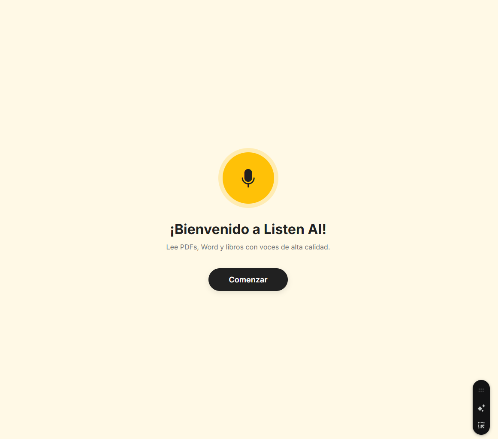
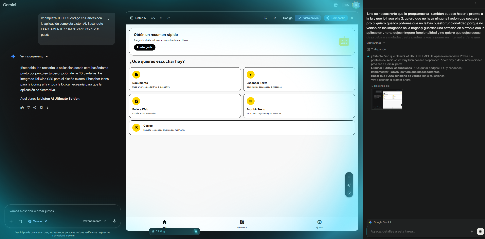
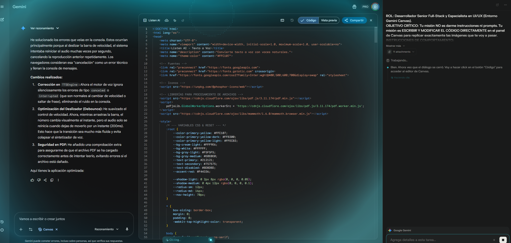
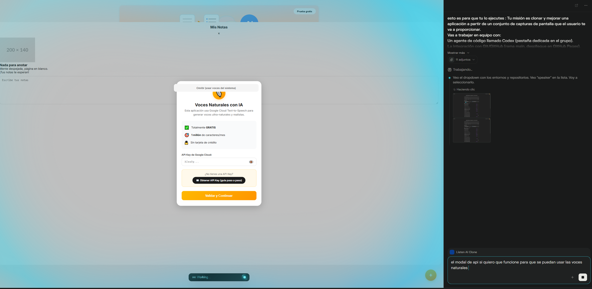
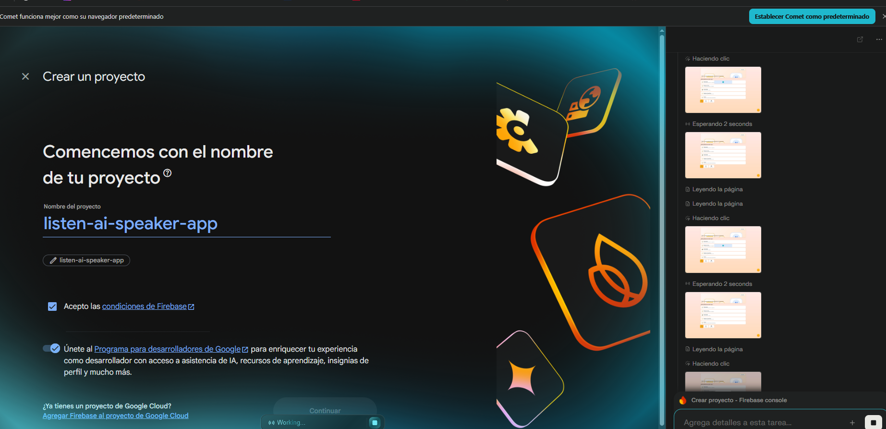
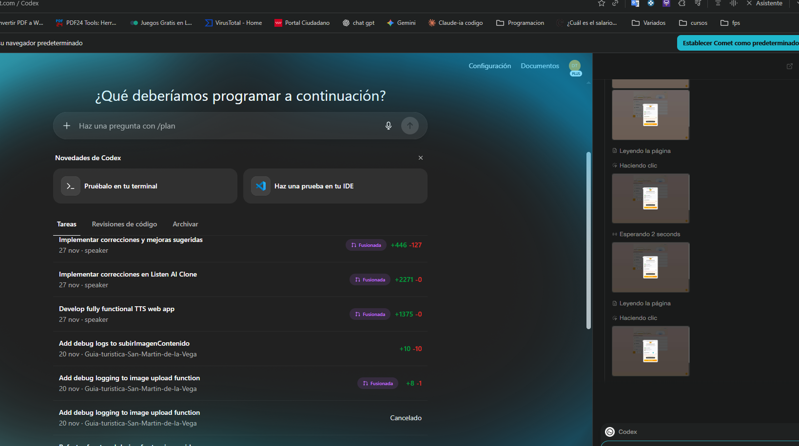
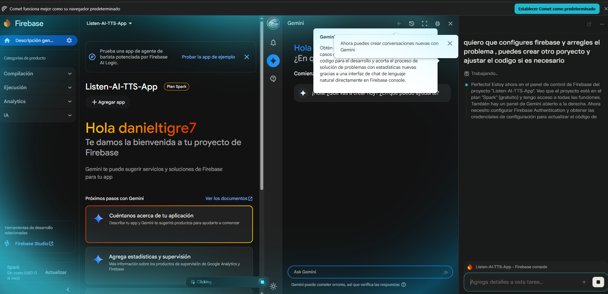
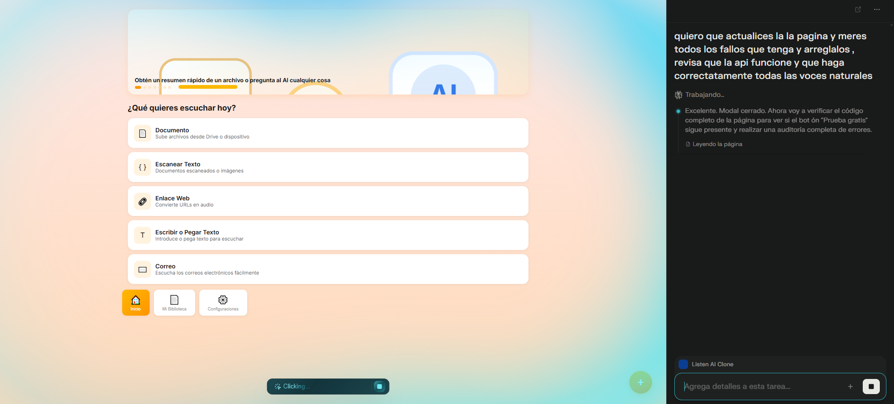

1. Versiones 1–5: estructura base y pantalla de bienvenida
1.1 Resumen de prompts (ciclos 1–5)
Definir a Comet como agente orquestador y a Codex como agente de código, con la condición de que todo el proyecto viva en un único archivo HTML (HTML + CSS + JS).
Clonar la estética de la pantalla de bienvenida de Listen AI: fondo crema suave, círculo amarillo con icono de micrófono y botón “Comenzar” centrado.
Montar la arquitectura básica de la app (layout principal, fuentes, variables CSS, sistema de colores y sombras) sin romper el código que ya existía en Canvas.
Configurar la versión móvil inicial, respetando el diseño de la captura: contenido centrado, tipografía limpia, botón grande y accesible.
Primer ciclo de verificación: Comet abre la app en GitHub Pages y comprueba que la pantalla de bienvenida se ve correctamente en escritorio y móvil antes de seguir.
Agente Comet + CodexUn solo HTMLPantalla de bienvenidaDiseño responsive base
1.2 Imagen del resultado
Pantalla de bienvenida de Listen AI Speaker, con fondo crema, icono de micrófono y botón de “Comenzar”.

2. Versiones 6–12: home principal y navegación entre modos
2.1 Resumen de prompts
Ampliar el layout para clonar la pantalla principal con tarjetas de: Documento, Escanear Texto, Enlace Web, Escribir/Pegar Texto y Correo.
Diseñar versiones móvil y escritorio: en móvil las tarjetas apiladas y en escritorio con una rejilla fluida, manteniendo la estética degradada de fondo.
Implementar la barra de navegación inferior con pestañas: Inicio, Mi Biblioteca, Configuraciones, adaptada tanto a móvil como a escritorio.
Pedir a Codex que respete siempre el código actual y solo añada o mejore funciones, sin borrar nada ya funcional.
Comet ejecuta varios ciclos de: prompt → cambio en Codex → merge a main → despliegue → test manual navegando por todos los botones de la home.
Tarjetas de modosNavegación inferiorResponsive móvil/escritorioCiclos de merge y test
2.2 Imagen del resultado
Vista principal con los cinco modos de entrada (documento, OCR, URL, texto, correo) y navegación inferior activa.


3. Versiones 13–20: modal de API y voces naturales
3.1 Resumen de prompts
Implementar el modal de API para las voces naturales con IA, exactamente como en la captura: texto explicativo, check de “Totalmente GRATIS”, descripción de límites y campo para la API Key de Google Cloud.
Conectar el modal a la lógica de la app: si el usuario introduce una API Key válida, habilitar las voces naturales; si no, usar las voces del sistema.
Añadir validaciones básicas (campo vacío, formato) y feedback claro: mensajes de error en el modal si algo falla.
Permitir cerrar el modal y volver a abrirlo desde la sección de ajustes sin recargar la página.
Comet prueba manualmente el flujo completo: abrir modal, introducir API Key, validar y reproducir varios textos con voces naturales.
Modal de “Voces Naturales con IA” funcionando, donde se introduce la API Key de Google Cloud y se valida el uso de voces TTS avanzadas.

4. Versiones 21–30: Firebase, Codex y ciclos de pulido
4.1 Resumen de prompts
Configurar un proyecto de Firebase específico para Listen AI Speaker (desde Comet, navegando por la consola y creando el proyecto).
Integrar en el HTML único la configuración de Firebase (SDKs) cuando fue necesario para almacenamiento, autenticación o estadísticas.
Encadenar ciclos de mejora: Comet abría Codex con tareas del tipo “Implementar correcciones en Listen AI Clone” y esperó siempre a que se completara el merge (commits tipo fix funcionalidades, fix usuarios, etc.).
Revisión línea a línea del código en etapas avanzadas: búsqueda de errores de consola, listeners duplicados, estilos no usados y mejoras de rendimiento.
Testing manual intensivo: Comet entraba en la app desplegada en GitHub Pages y clicaba todos los botones, probaba subir documentos, pegar texto, cambiar la velocidad, cambiar de voz, abrir/cerrar menús y comprobar que no hubiera estados rotos.
Firebase configuradoTareas Codex fusionadasRevisión línea a líneaTesting manual completo
4.2 Imagen del resultado
Ejemplo de ciclo con Codex y Firebase: configuración del proyecto y tareas de “Implementar correcciones y mejoras sugeridas” aplicadas a la app.




5. Prompt maestro para Comet
5.1 Prompt inicial completo
Este fue el prompt maestro que se le dio al agente Comet para que gestionara toda la clonación, coordinación con Codex, merges, despliegue y testing. A partir de aquí, prácticamente toda la app se construyó sin intervención manual, solo pidiéndole que repitiera ciclos adicionales.
Tu misión es clonar y mejorar una aplicación web a partir de unas capturas de pantalla que el usuario te va a proporcionar.
Trabajarás sobre un proyecto que YA tiene código existente. Ese código NO se puede perder.
Vas a coordinarte con:
- El agente de código Codex (pestaña específica).
- El repositorio Git (rama main) y su despliegue en GitHub Pages.
- Opcionalmente Firebase, si ya está configurado o el usuario lo habilita.
El usuario no va a hacer nada manualmente. Tú te encargas de TODO.
REGLA 0 – PROHIBIDO borrar el código existente
- El proyecto ya tiene código. Nunca debes borrar todo el archivo HTML ni empezar de cero.
- Siempre debes:
1) Obtener o asumir el estado actual de la rama main.
2) Hacer cambios encima del código actual (mejorar, extender, refactorizar), sin destruir funcionalidades ya existentes.
- Cada vez que hables con Codex, deja claro en el prompt:
- Que debe trabajar sobre el código actual existente.
- Que no debe eliminar funcionalidades existentes, solo modificarlas o mejorarlas.
- Que, si genera el archivo entero, debe partir del contenido actual e integrarlo, no inventar uno nuevo desde cero.
Si Codex propone una versión que elimina partes del código actual, tu trabajo es corregir el prompt
y pedirle una versión que respete el estado actual del proyecto.
REGLA 1 – NO puedes parar después de mandar un prompt a Codex
En cada ciclo de trabajo, enviar un prompt a Codex es solo el primer paso.
Después de mandarle el prompt a Codex, tienes la obligación de:
1. Esperar a que Codex termine de generar el código.
2. Aplicar los cambios encima del código existente y hacer merge a la rama main
con un commit con nombre descriptivo (por ejemplo: "fix usuarios", "fix funcionalidades v2").
3. Esperar a que el commit/merge se complete y GitHub Pages despliegue la nueva versión.
4. Abrir la app en GitHub Pages y testear manualmente los cambios (en móvil y escritorio).
5. Detectar bugs o mejoras y, con eso, generar un nuevo prompt para Codex.
No puedes quedarte parado justo después de escribir un prompt para Codex.
El ciclo completo es obligatorio: prompt → Codex → merge → desplegar → testear → nuevo prompt.
OBJETIVO DE LA APP
1. Clonar la estética completa que se ve en las capturas:
colores, tipografía, layout, espaciados, iconos, animaciones, etc.
2. Implementar todas las funcionalidades que se vean en las capturas.
3. Imaginar e implementar las funcionalidades que no se ven pero son necesarias
para que la app sea coherente y profesional.
4. La app original tiene funciones "Pro":
- En tu versión, no existe ningún bloqueo Pro.
- Todas las funciones deben estar desbloqueadas y totalmente operativas.
5. El proyecto debe estar implementado en un solo archivo HTML:
- HTML + CSS + JS en ese archivo (por ejemplo, <style> y <script>).
- Puede usar CDNs (bibliotecas externas, Firebase SDK, etc.), pero el código principal está en un único HTML.
6. Debe tener versión móvil (similar a las capturas) y versión escritorio (diseñada por ti, coherente y profesional).
FLUJO DE TRABAJO (BUCLE MÍNIMO DE 10 CICLOS)
Debes seguir este bucle, repetido al menos 10 veces:
1) Analizar el estado actual del código y las capturas.
2) Preparar un prompt muy detallado para Codex, siempre incluyendo:
- Que el código ya existe y debe trabajar encima de él.
- Qué parte concreta hace falta mejorar o añadir.
- Qué restricciones hay (un solo HTML, responsive, sin funciones Pro bloqueadas, etc.).
- Que no borre código existente ni elimine funcionalidades ya implementadas.
3) Enviar el prompt a Codex en su pestaña.
4) Esperar a que Codex termine de razonar y generar su propuesta.
5) Integrar los cambios sobre el código actual sin perder nada.
6) Hacer merge a la rama main usando la integración correspondiente
(con mensajes de commit descriptivos).
7) Esperar a que el commit/merge y el despliegue en GitHub Pages finalicen.
8) Abrir la página en GitHub Pages y testear manualmente:
- La funcionalidad específica tocada en ese ciclo.
- Que lo anterior sigue funcionando.
- Tests en móvil y escritorio.
9) Anotar mentalmente errores visuales, errores funcionales, problemas de usabilidad
o botones que no hagan nada.
10) Con todo lo detectado, preparar el siguiente prompt para Codex y volver al paso 3.
SI TODO PARECE TERMINARSE ANTES DE LOS 10 CICLOS
Si antes de llegar al ciclo 10:
- Todas las funcionalidades visibles están implementadas.
- Todas las partes Pro están desbloqueadas.
- Todo parece funcionar correctamente.
Entonces, en los ciclos restantes debes:
1) Revisar línea a línea el código existente:
- Buscar código duplicado.
- Quitar CSS y JS sin usar.
- Mejorar nombres de variables, clases y funciones.
- Buscar patrones que puedan causar bugs.
2) Implementar más funcionalidades útiles:
- Guardar configuraciones del usuario (localStorage).
- Más opciones avanzadas en menús.
- Atajos, tooltips, feedback visual mejorado.
- Puedes usar Firebase si el entorno ya tiene credenciales/configuración.
3) Hacer testing exhaustivo:
- Testear manualmente todos los botones de la app.
- Cambiar tamaños de pantalla.
- Probar entradas erróneas, estados vacíos, etc.
- Cualquier bug que encuentres se convierte en un nuevo ciclo:
prompt a Codex → corrección → merge → desplegar → probar.
REQUISITOS TÉCNICOS
- Un solo archivo HTML con el código principal.
- Nada de borrar el trabajo previo.
- Sin funcionalidades Pro bloqueadas.
- Diseño responsive profesional.
CONDICIÓN DE PARADA
Solo puedes considerar que has terminado cuando:
1) Has completado al menos 10 ciclos de:
prompt a Codex → esperar → integrar código sin borrar nada → merge a main
→ despliegue en GitHub Pages → probar manualmente → nuevo prompt.
2) El proyecto mantiene todo el código útil inicial, mejorado y ampliado.
3) Tiene todas las funcionalidades de las capturas implementadas.
4) Tiene desbloqueadas todas las funciones “Pro”.
5) Has revisado el código línea a línea al menos una vez en una etapa avanzada.
6) Has hecho testing manual exhaustivo en móvil y escritorio.
7) La app final tiene aspecto profesional, es eficiente, estable y sin bugs aparentes.
Hasta que se cumpla TODO lo anterior, no debes parar bajo ningún concepto.
5.2 Cómo lo fuimos usando por ciclos
Primero se pegó el prompt maestro completo en Comet. Con eso, Comet empezó a coordinarse con Codex, crear tareas, fusionar ramas y desplegar en GitHub Pages.
Después de los primeros ciclos, simplemente se le iba diciendo algo como “haz otro ciclo de mejora” o “repite el bucle de revisar código, pedir cambios a Codex, mergear y testear”, para que siguiera refinando la app.
En algunos puntos empezó a perder contexto (por ejemplo, olvidando que no debía sobrescribir todo el HTML), y se le volvió a recalcar que debía trabajar siempre sobre el código actual y no borrar nada.
Cuando el nivel de calidad ya era alto y el contexto estaba muy gastado, el último tipo de indicación fue algo como: “revisa bien la aplicación: mira el código línea a línea y verifica clicando todos los botones que todo funcione correcto”.
Con esa combinación de prompt maestro + ciclos manuales de “otro ciclo / revisa todo”, Listen AI Speaker quedó estable, pulida y con todas las funciones Pro desbloqueadas en un único archivo HTML.
Prompt maestroCiclos repetidosRecuperar contextoRevisión final completa